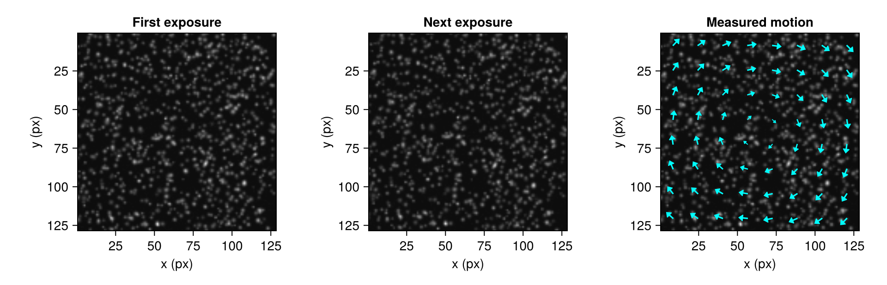

See the flow in your images
Two exposures of illuminated particles reveal how a fluid moves. Hammerhead turns the change in their patterns into a field of displacement vectors.

A synthetic particle pair and its measured swirl. Arrows show direction; their lengths are enlarged for visibility.
Start here: make your first vector field →
Follow one image pair from particles to a correlation peak and a complete field. Then change the window size, mask a reflection, and convert pixels to velocity. No recording or calibration equipment is needed to try it.
Install
In Julia 1.10 or later, press ] to enter package mode:
pkg> add Hammerhead CairoMakieCairoMakie draws the lesson figures. For desktop tools, also install HammerheadGUI.
Choose your next experiment
- Have a recording? Find a tip vortex, including the region where particles disappear and the vectors become harder to judge.
- Prefer desktop tools? Take the GUI tour to load images, draw masks and explore a field.
- Have many frames? Measure flow statistics from a sequence rather than a single pair.
- Need another view of motion? Use two cameras for stereo PIV or follow individual particles.
PIV follows particle patterns within small windows; PTV follows individual particles. A spatial calibration and the exposure delay turn displacement into velocity. Start with the images and check the measurement before interpreting small flow features.